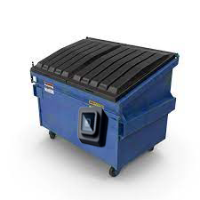

Template License
Posted by Owner | Filed under templates, internet
This is a free CSS website template by BlueWebTemplates. This work is distributed under the Creative Commons Attribution 3.0 License, which means that you are free to use it for any personal or commercial purpose provided you credit me in the form of a link back to BlueWebTemplates.com.
What is it?
The Touch-Less Dumpster – a cutting-edge solution revolutionizing waste management. Say goodbye to traditional dumpsters and embrace a new era of cleanliness and efficiency. Our dumpster features an innovative square sensor, strategically placed for touch-less operation, minimizing the risk of contamination and promoting a hygienic waste disposal experience. The sensor's top is thoughtfully designed with a rubber brim, ensuring precision and reducing false-positives. Designed for commercial, residential, and municipal use, the Touch-Less Dumpster represents a pivotal step towards a safer, more streamlined, and environmentally conscious future in waste disposal.
Why is it?
Have you ever taken out the trash and though "great, now I have to touch the dirty dumpster"? Now you don't have to! The touchless dumpster is a new inovation in the wake of touchless devices. Just wave your hand in front of its square sensor and the dumpster opens for you, leaving you to only throw your trash in it!.